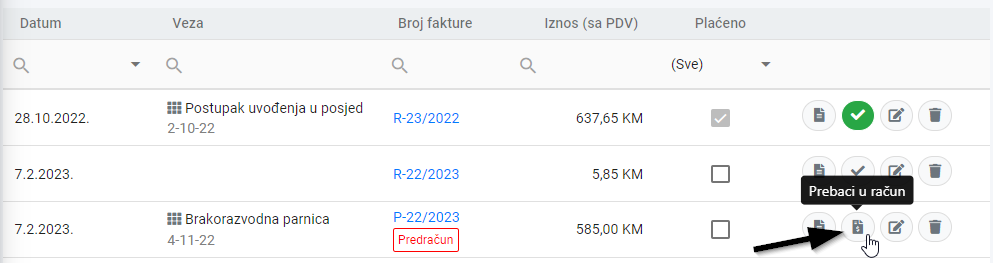

Ako klijentu prvo šaljete predračun, na koji on pristane, vrlo jednostavno možete taj predračun pretvoriti u račun.
- Prvi način je da izmjenite taj predračun, prebacite vrstu sa Predračun na Račun i snimite fakturu.
- Drugi način je da u listi faktura unutar alata Fakture, kliknete na ikonu Prebaci u račun:
